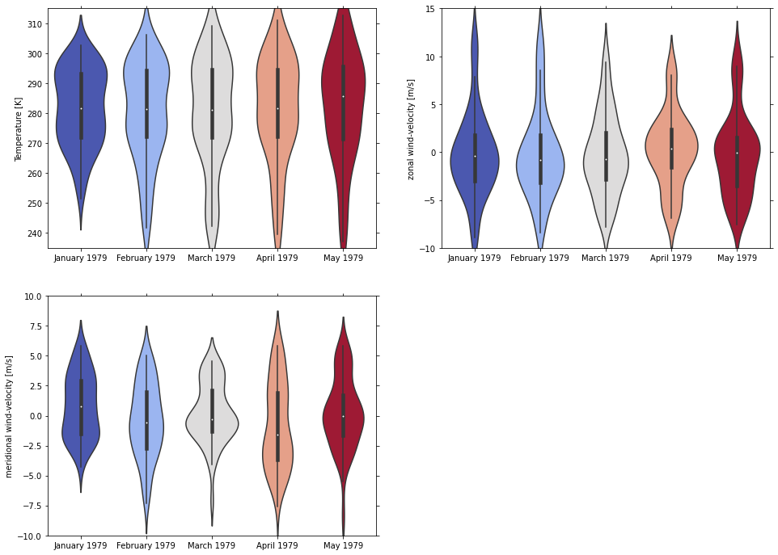

Psyplot Example Gallery¶
Welcome to the psyplot example gallery. This collection of notebooks shall introduce you to some basic concepts for the visualization with psyplot, and demonstrate the skills.
You can
run the notebooks on mybinder

test the psyplot GUI and psy-view in your browser
have a look at the rendered gallery
access the source code of this repository on github


These examples are automatically tested and deployed using CircleCI


